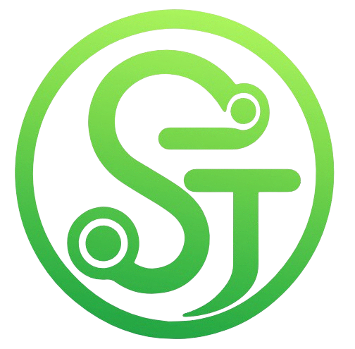
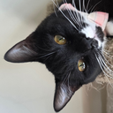

Tools I Use
A running list of software, utilities, and apps I rely on day to day. Nothing fancy — just stuff that earned a permanent spot on my machine.

OpenSteamTool
A utility that enables access to Steam content, including unlocking unowned games and DLCs, automating manifest downloads, and managing protected files using decryption keys.
View project arrow_outward
Squeegee Manifest App
The desktop app for browsing the library and installing Lua scripts and manifest files, which utilizes the Hubcap API for seamless integration and management of your game content.
View project arrow_outward
MAS
Open-source Windows and Office activator featuring HWID, Ohook, TSforge, and Online KMS activation methods, along with advanced troubleshooting.
View project arrow_outward